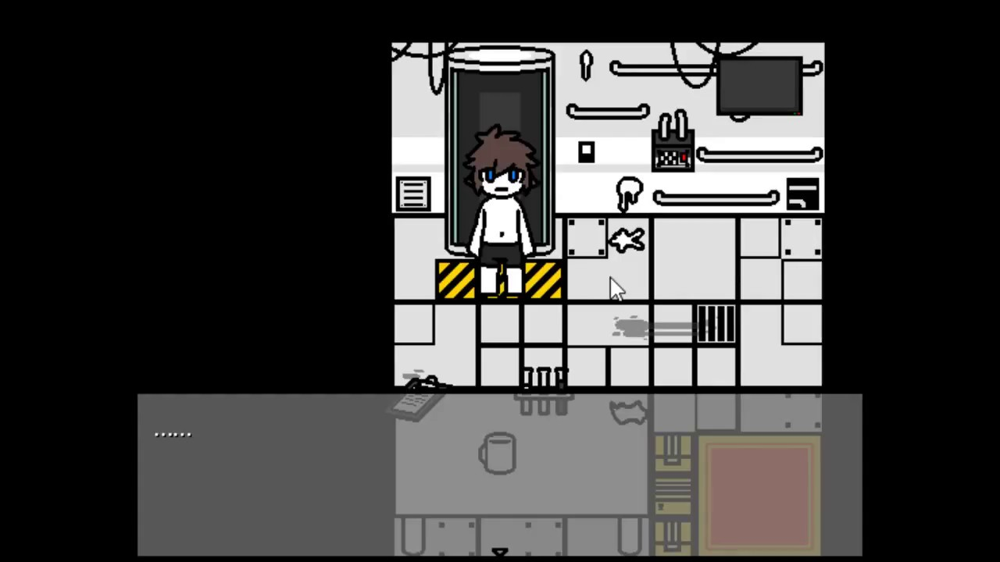
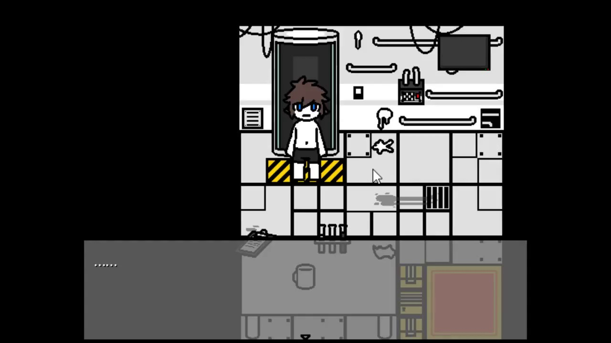

Об игре
Содержание игры:
"Changed" - это сложная экшн игра с элементами паззла, также в ней присутствуют погони.
Протагонист игры просыпается в странной комнате, после чего исследует незнакомое ему лабораторное здание.
Во время своих похождений ему придётся столкнуться с различными видами существ, которые способны без труда "похитить" его тело. Главный герой способен лишь исследовать местность и пытаться выбраться из этого опасного здания.
Кто секретно направляет его в этом пустынном мире? Почему он заперт здесь? Что случилось с миром снаружи?
Мистика и запутанность будут всплывать всё больше и больше, пока вы бродите по этому зданию.
Только, разумеется, не потеряйтесь в нём...
Особенности игры:
Главный герой способен лишь убегать, ведь он является жертвой для других существ.
· Никаких вспомогательных предметов, даже инструментов. Все задачи необходимо решать умом и действиями.
Высокая сложность игры, объединяющая в себе японские RPG и I WANNA игры.
· 8-битный стиль музыки пробуждает воспоминания из детства в ретро стиле.
· Сложность игры подходит как тем, кто любит понаблюдать со стороны, так и тем, кто готов предпринимать действия.
• Пытайтесь понять действия существ, чтобы сбежать от них.
· Ловушки, пасхалки в текстах, продуманный сюжет мира и персонажей, множество исследуемых объектов.
Несколько концовок. Концовка будет зависить от ваших действий и вашего исследования окружения.
• Прохождение рассчитано примерно на шесть часов игры (если получится).
.jpg)
.jpg) 
